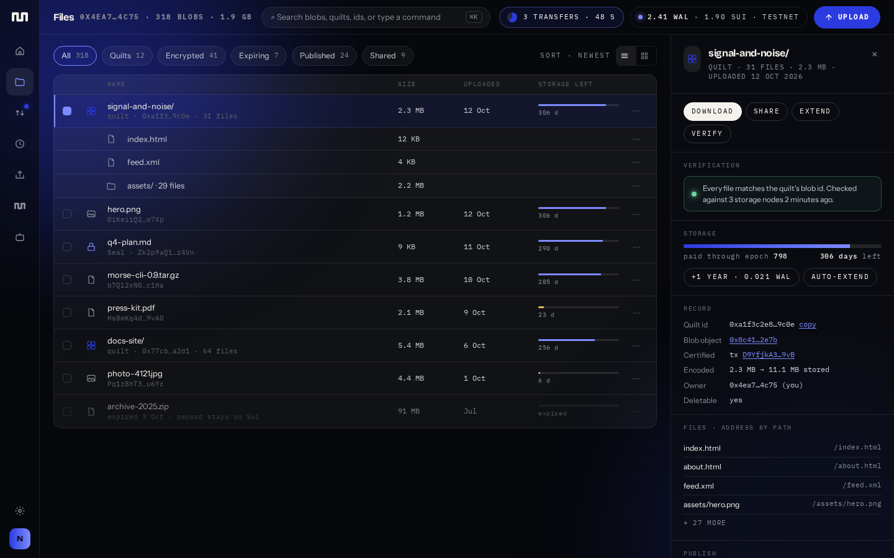

Drop folders, stage them, see the price, sign once per blob. Every object your wallet owns in one place, with its storage clock, its record on Sui and a way to prove it is intact.

Drops land in a tray with the live price. One button signs the batch. Close the tab and the tray is still there.
Expiry is a bar on every row, a timeline on the overview, and one action to extend everything that needs it.
A folder becomes one quilt with paths intact. Open it in place, address files by path, publish it as a Walrus Site.
Re-check any blob against storage nodes, share an aggregator link, or attach it to a Morse publication with a record.
| Walrus Console | Morse Uploader | |
|---|---|---|
| Login | Google or Apple account | Any Sui wallet, no account |
| Keys and payment | Console manages WAL for you | Your wallet signs every transaction |
| Limits | 5 GB per space, 5 folders, 100 MiB per upload | Walrus limits only |
| Folders | Encrypted private folders | Quilts with paths, public or Seal-encrypted per folder |
| Expiry | Auto-extended by Console | Visible per blob, extend by hand or auto-extend with a cap |
| Verification | Upload status polling | Re-verify any blob against storage nodes |
| Publishing | Not in scope | Morse publications and Walrus Sites |
| Agents | MCP with API keys | MCP with a wallet-scoped, revocable capability |